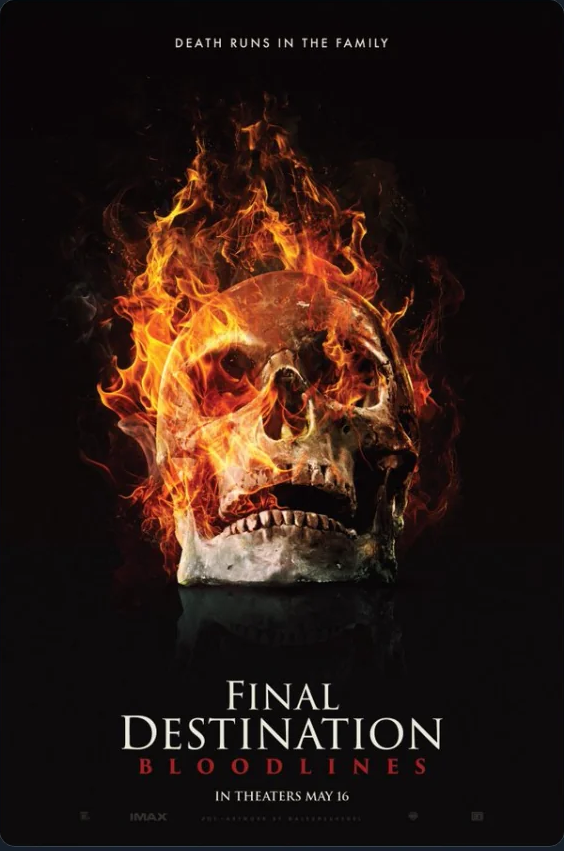
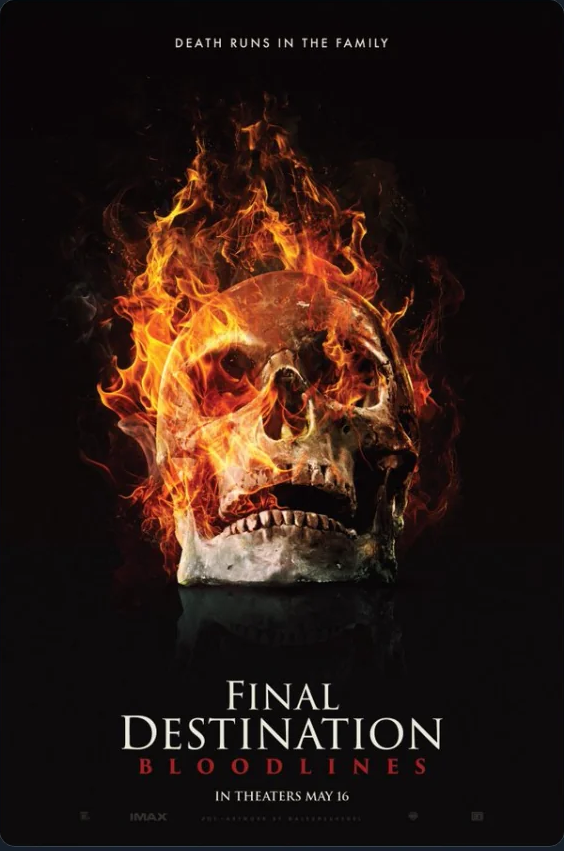
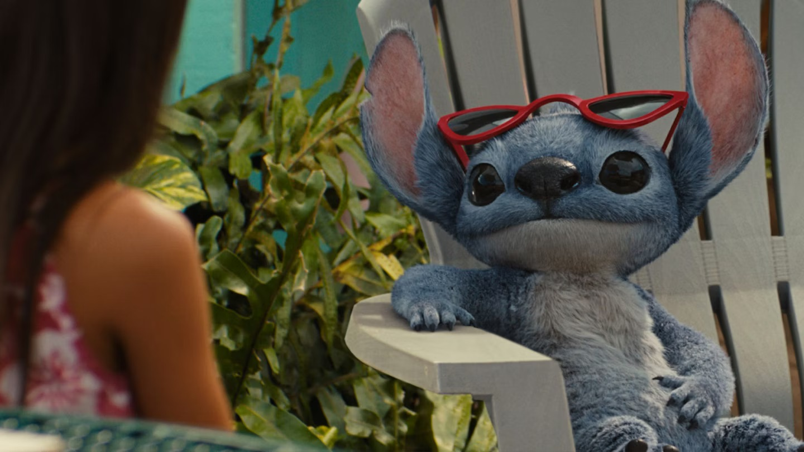
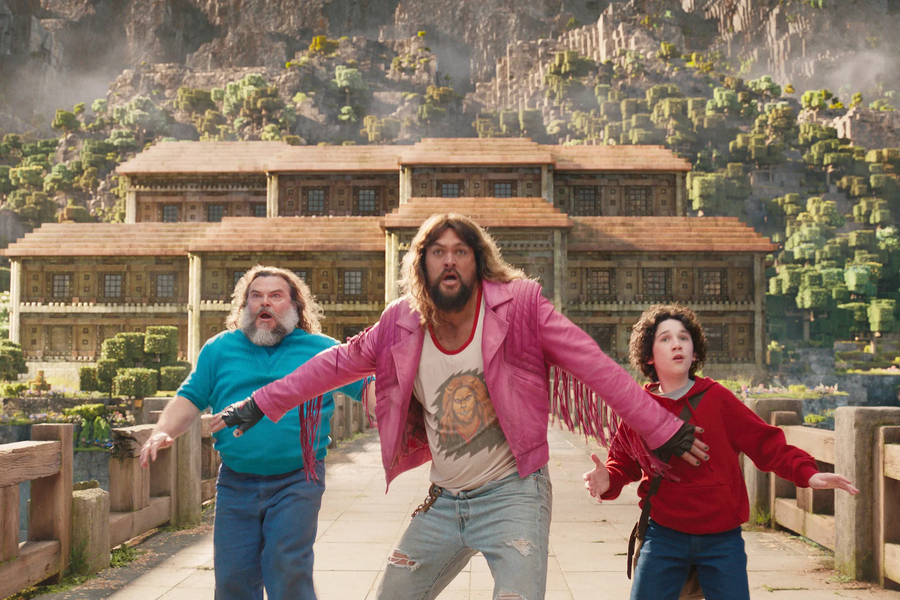
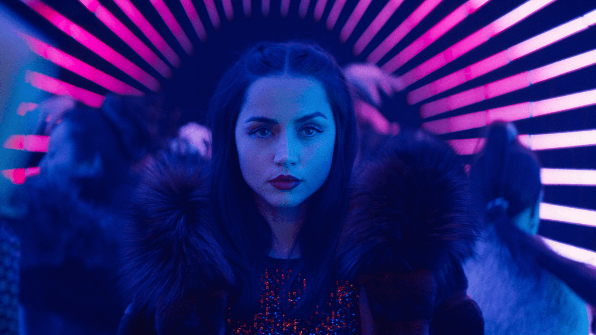
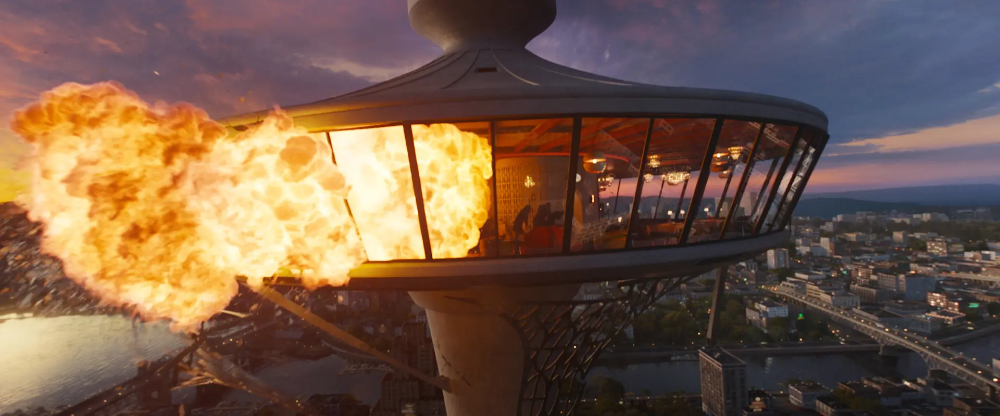

Genre: Comedy/Sci-fi Runtime: 1h 48m Rating:

The film tells the story of "the bond formed between a lonely
human girl named Lilo and a dog-like
alien named Stitch, who is engineered to be a force of destruction.
Pursuing aliens, social workers
and the idea of the bond of family figure into the proceedings."
Genre: Comedy/Adventure Runtime: 1h 41m Rating:

A mysterious portal pulls four misfits into the Overworld, a
bizarre, cubic wonderland that thrives on
imagination. To get back home, they'll have to master the terrain
while embarking on a magical
quest with an unexpected crafter named Steve.
Genre: Action/Thriller Runtime: 2h 5m Rating:

Taking place between the events of John Wick: Chapter 3 –
Parabellum and Chapter 4. Eve
Macarro, a ballerina-assassin, begins to train in the assassin
traditions of the Ruska Roma and
sets out to exact revenge for her father's death.
Genre: Horror/Mystery Runtime: 1h 49m Rating:

Plagued by a violent recurring nightmare, college student
Stefani heads home to track down the
one person who might be able to break the cycle and save her family
from the grisly demise that
inevitably awaits them all.